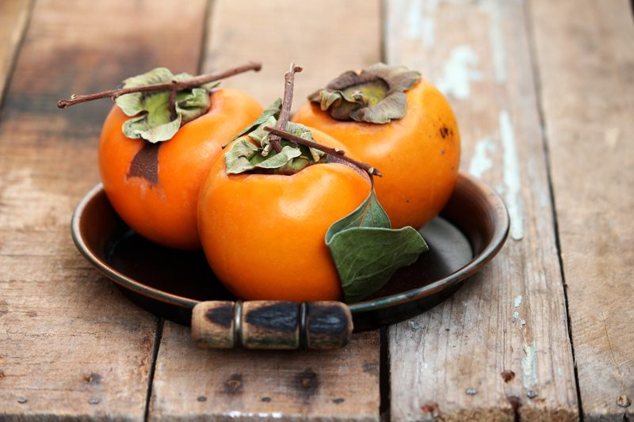

Persimmons (fresh, dehydrated)
Persimmons come with a range of what I like to refer to as Autumn flavors. They are sweet, can have a honey-like flavor, or you might notice a hint of dates in them… lastly, I have tasted some that take on an apricot flavor that is dusted with cinnamon.
In Latin, persimmons means “food of the gods. And what other names would be more fitting for such an exotic fruit? With the meaning of “food of the gods”, it is not surprising to learn that they are a powerhouse in nutrition.

Move over Oranges
We tend to associate oranges with being our go-to for Vitamin C. But persimmons have a wealth of health benefits packed inside of them, starting with a generous provision of Vitamin C. A single persimmon can have roughly 80% of the daily requirement of Vitamin C, which is one of the highest of any fruit.
We need a healthy dose of Vitamin C because it helps to stimulate the immune system and increases the production of white blood cells. These are our primary line of defense for our body to fit against microbial, viral, and fungal infections, as well as foreign bodies or toxins.
Fresh Persimmons
These fruits can be eaten fresh, dried, raw, or cooked. The two most popular types are known as Fuyu and Hachiya. Today, I am featuring the Fuyu in the photos. They are smaller and flatter in appearance than the Hachiya version. They can be eaten when the flesh is hard and still be absolutely delicious. Left at room temperature, it, too, will soften to custard. Hachiya is acorn-shaped and needs to be almost melting in texture before you eat it. At this point, many people just cut it in half and spoon it out like a pudding.
Dehydrated Persimmons
Dried persimmons taste like dried dates to me. Be sure to slice them horizontally which will produce a beautiful star-burst look in the center of each persimmon chip. They retain their beautiful robust orange color without any type of preservative. They make for a wonderful snack and I also love to use them as decorations on raw cakes. Learn how to dry them (here).

To eat a Hachiya, remove the flower-shaped stem on top and use a spoon to scoop out the custard-like flesh. It’s a ridiculously… deliciously… messy affair, so roll up your sleeves. They can be pureed and used as a sauce for ice cream or they can be dried and eaten as a snack. You can also spread the puree out on dehydrator sheets and create a healthy fruit roll up.
To eat a Fuyu, remove the flower-shaped stem on top and eat it like an apple, skin and all, or it can be peeled. If left at room temperature, Fuyus will gradually soften. They are best eaten out of hand or tossed in salads and salsas.
Selecting and Storing
Regardless of what type you’re looking for, you want to seek out ones that are a deep, rich fall orange. Sometimes you won’t have the option to choose one over the other.
I most commonly find Fuyus in my local grocery stores. That being the case, look for firm ones without blemishes. If you have the choice and decide on the Hachiyas style, you can buy them firm, but just be aware that you’ll have to leave them at room temperature for a few days to soften before you can use them.
Ideally, you will want to keep the persimmons at room temperature for as long as you can. When you refrigerate them, they suffer chill damage quite quickly and will develop soft slimy spots.
You can speed up the ripening process by tucking them in a paper bag to concentrate the ethylene gas.
© AmieSue.com